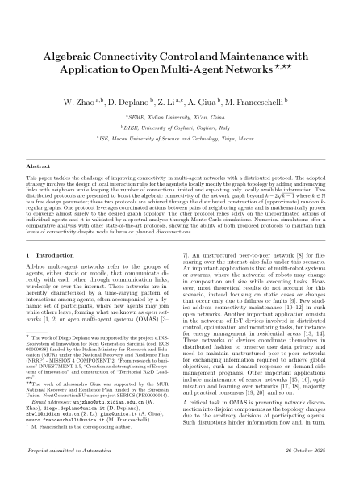
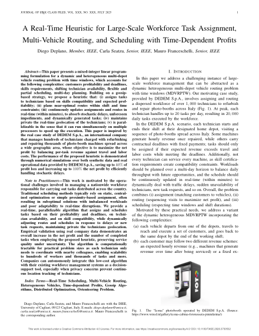
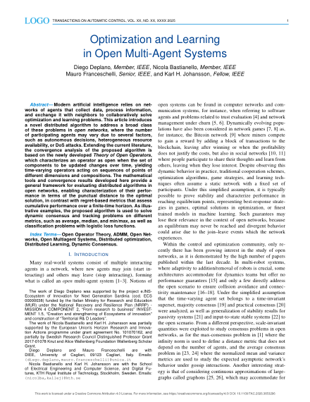
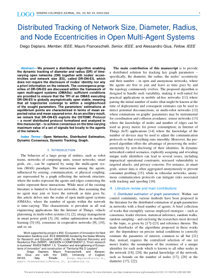
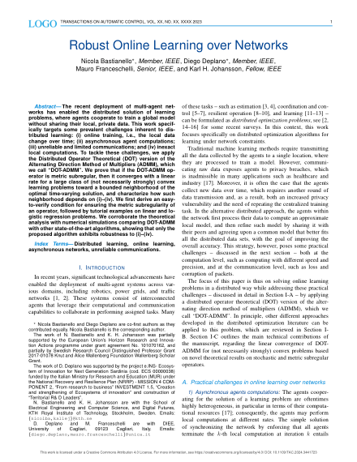

Mauro Franceschelli
Associate Professor of Automatic Control (IINF-04)
Department of Electrical and Electronic Engineering, University of Cagliari
Via Marengo 2, 09123 Cagliari, Italy
Selected publications
View all publications



RESEARCH INTERESTS
- Cooperative distributed control of multi-agent systems and networks -
- Distributed optimization, estimation and learning -
- Consensus and gossip algorithms -
- Resilient networks, resilient control and optimization -
- Nonsmooth analysis and monotone systems -
APPLICATION AREAS
- Multi-robot systems and UAV coordination -
- Distributed electric demand side management and response -
- Federated and distributed learning -
- Smart grids and smart urban environments -
- Sensor networks -